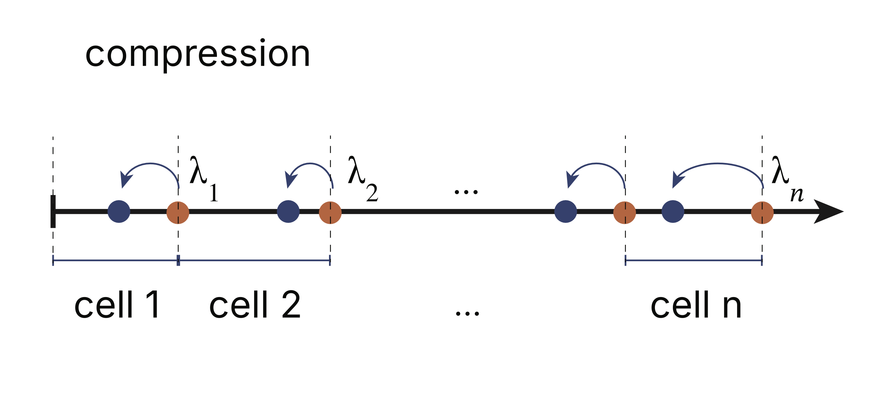
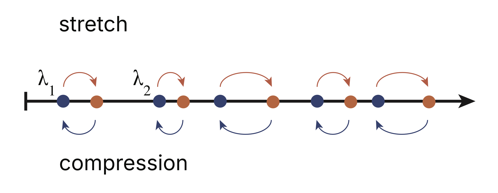
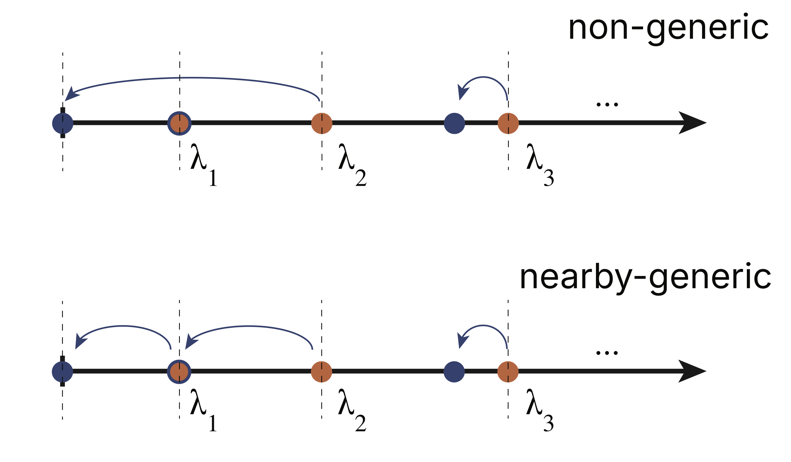

A generic invariance property of principal components
Published on Sun 26 July 2026
An uncomfortable property of PCA is that its results are sensitive to changes in measurement scale. Measuring one variable in inches instead of centimeters, or one time variable in seconds instead of days, generally rotates the principal axes and changes the eigenvalues. Surprisingly, although both the principal components and eigenvalues change continuously with scale, we prove here that their ordering typically does not:
- Under a continuous scale adjustment, the initial state's \(k\)-th largest principal component generically maps into the final state's \(k\)-th largest principal component, for each \(k\). This holds provided each stretch direction is not orthogonal to any mode (the "generic" case). In this sense, we can say that the modes of PCA are generically "order-stable" with respect to changes in measurement scale — see the figure below for an example.
- If we stretch or compress in only one direction, the eigenvalues GENERICALLY? "interlace" in a particular way with those of the original system.
- In a companion post, we derive the limiting results for a very strong compression along one direction as well as those for a strong stretch along a single direction. In both cases, the stretch direction becomes an independent mode, "de-hybridized" from the other measurement directions.
Although motivated by PCA, these results apply to arbitrary positive-definite symmetric matrices. They therefore describe how eigenmodes evolve under stretching in many settings, including mechanical systems, covariance matrices, and other spectral problems.
Figure 1: PCA response to scaling in \(2\)-d: When we compress along the \(\textbf{x}\)-direction, the smaller principal component rotates to align with the compression direction. Similarly, when we stretch, the larger component rotates into the stretch direction. I.e., the initial eigenvalue ordering is maintained throughout.
Introduction
In Principal Component Analysis ("PCA" for short, see our prior post for an intro), we are concerned with the eigensystem of a given data set's correlation matrix,
The eigensystem provides us with an ellipsoidal approximation to the data set, giving us a sense of its geometry. Projecting into the space spanned by a truncated subset of these eigenvectors can often give us a high-fidelity compression of the data set. It is a workhorse algorithm in data analysis. The fact that PCA's results are sensitive to measurement scale is therefore a cause of frequent discomfort, because it's never clear which set of units is the "right" one for a given application. The invariance property we derive here suggests that the sensitivity is not as consequential as it might at first seem.
To explore this problem, we'll be mostly interested here in the response to a simple scaling of the first coordinate, writing \(x \to s\, x\). In this case,
and
This sends the correlation matrix to
How do the eigenvectors and eigenvalues of this matrix change as we adjust the scale factor \(s\)?
Our key results characterizing what happens under changes in scale are outlined at the top of this page. Their derivation follows from three steps:
- First order perturbation theory shows that each eigenvalue responds monotonically to a stretch's stength.
- In the limit of a very strong compression, one eigenvalue goes to zero, while the other finite eigenvalues approach those of the subspace orthogonal to the stretch direction. The Cauchy interlacing theorem tells us that these finite eigenvalues interlace in a particular way with those of the original correlation matrix.
- Combining the last two points, we show that — provided the stretch direction is not orthogonal to any principal component (the "generic case") — the eigenvalues must maintain their order under any stretch.
We walk through these main arguments in the next section. The limiting forms and some other results are worked out in a companion post. Finally,some comments on what can happen outside the generic case are covered in an appendix below.
Eigenvalue order maintenance and interlacing
Coupled perturbation system
To begin our analysis, we'll consider perturbation equations. If we let \(s \to s + \delta s\) in (\ref{4}), the first order change in \(M\) will be given by
Applying standard first order perturbation theory then gives
Here, \(\alpha_i\) is the first component of the \(i\)-th eigenvector (evaluated at \(s\)),
The first order change in the eigenvector can be used to also derive the following equation for the rate of change of \(\alpha_i\). This is,
We see that (\ref{6}) and (\ref{8}) give us a coupled set of differential equations that we can use to solve for the \(\alpha_i\) and \(\lambda_i\) as we adjust \(s\) by finite values.
Key Observations:
-
From (\ref{6}), we see that each non-zero eigenvalue grows monotonically with \(s\).
-
From (\ref{8}), we see that if a particular eigenvector is orthogonal to the stretch direction, it will remain so for all \(s\).
Eigenvalue Interlacing Under a Strong Compression
The Cauchy interlacing theorem states the following: Let \(A \in \mathbb{R}^{n\times n}\) be a symmetric matrix, and \(B \in \mathbb{R}^{(n-1) \times (n-1)}\) a principal submatrix of \(A\) (obtained by deleting both the \(i\)-th row and column of \(A\) for some \(i\)). If \(\lambda_1 \leq \lambda_2 \leq \ldots \leq \lambda_n\) are the ordered eigenvalues of \(A\) and \(\mu_1 \leq \mu_2 \leq \ldots \leq \mu_{n-1}\) are the ordered eigenvalues of \(B\), they interlace:
That is, \(\mu_i\) can't be larger than \(\lambda_i\) and it also can't dip below the next lower eigenvalue of \(A\).
This theorem has direct relevance to our problem in the limit of a single strong compression: Qualitatively, what happens in this limit is that we effectively project the data set into the space orthogonal to the compression direction (if this is \(\textbf{x}\), say, each data point's \(x\) value is pushed to zero). As a result, one eigenvalue will be zero in this limit (the width in the compression direction), while the other finite eigenvalues will be those characterizing the space orthogonal to \(\textbf{x}\). I.e., the finite eigenvalues will match those of the first principal submatrix of \(M\). The Cauchy interlacing theorem therefore applies in this limit.
Key Observations:
- Under a strong compression along a single direction, one eigenvalue goes to zero and \(n-1\) eigenvalues remain finite. These new finite eigenvalues \(\mu_i\) and the original eigenvalues \(\lambda_i\) satisfy (\ref{9}).
- We work through this limiting behavior in detail in a companion post.
Eigenvalue Interlacing (generic case)
In Figure 2, we've illustrated what happens to the eigenvalues under a compression. There, we've labeled the spaces between the original eigenvalues (blue dots) as ordered "cells". If we compress all the say to \(s \rightarrow 0\), our last section indicates that there must be one eigenvalue in each cell. Consider then what happens under a finite compression. Again, assuming the generic case, each eigenvalue must decrease continuously as the compression strength is raised. In particular, the first eigenvalue \(\lambda_1\) must decrease as we start to compress and it must occupy the first cell throughout. A second eigenvalue cannot enter the first cell then, because the monotonicity property would imply that this second eigenvalue could not exit before getting to the \(s \to 0\) limit. It follows that the first eigenvalue must be the only eigenvalue in the first cell throughout. Similarly, \(\lambda_2\) must be the only eigenvalue in the second cell throughout, and so on.

Figure 2: Upon compressing by any finite \(s < 1\), the eigenvalues must always monotonically decrease, always maintaining the interlacing property.
To summarize the above, if we let the eigenvalues of the original (relatively stretched) matrix be \(\lambda_i^{(s)}\) and those of the compressed system be \(\lambda_i^{(c)}\) then we have
for any generic compression. But of course any compression played in reverse is a stretch, so (\ref{10}) can also be used to characterize what happens under a stretch. It follows that upon any finite stretch, the eigenvalues again interlace, but in the opposite direction: The \(i\)-th eigenvalue will increase, but not so much as to cross the original \(i+1\)-st eigenvalue. The figure below illustrates these results.

Figure 3: Upon a stretch by \(s > 1\) along a single direction, the eigenvalues maintain their ordering. Further, the \(i\)-th eigenvalue cannot increase beyond the original \((i+1)\)-st eigenvalue. Similarly, under a compression along a single direction, the eigenvalues each decrease, but without dipping below the original preceeding eigenvalues.
Final observations :
-
Under a generic, single axis compression or stretch of any strength, the eigenvalues interlace and maintain their initial order.
-
Since any set of compressions and stretches can be carried out via a composition of single axis compressions and stretches, it follows that in the generic case the eigenvalues will also adiabatically maintain their order.
Summary
In our first section, we showed that the ordering of our eigenvalues is maintained under continuous changes in scale. Because of this, we know that under a large stretch in one direction, it must be the first principal component that rotates into the stretch direction. Similarly, under a strong compression, it must be the initial last principal component that compresses into this direction. The details of how the rotation occurs can be evaluated numerically using the perturbation equations, but these limiting forms already give us a qualitative understanding of what happens under scaling.
A note on a key detail here: The large stretch limit was a bit confusing to me at first because I was looking for modes orthogonal to \(\widehat x\). However, the first principal component is not precisely along this direction even at large \(s\), but rather along the fit line. This results in small off axis components scaling like \(s^{-1}\). These couple with the \(s M_{1j}\) terms in the eigenvalue equations for the other modes, resulting in a cancelation of the \(s\) factors and a finite contribution. This took some time to understand.
Combined with eigenvalue order maintenance, this pins down what happens to each surviving eigenvalue as we compress: the \(k\)-th largest eigenvalue starts at \(\lambda_k\) (at \(s=1\)) and must end at \(\mu_k\) (as \(s \to 0\)), without crossing any other eigenvalue along the way. Since \(\mu_k\) is guaranteed to lie between \(\lambda_k\) and \(\lambda_{k+1}\), this eigenvalue can only move down, and only by an amount bounded by the gap to the next eigenvalue below it in the original spectrum.
The analysis in 2-d can be easily worked out analytically to gain better intution still — we review this in our appendix below. These results helped to guide the general analysis above.
Appendix A: Interlacing special cases
In the main text, we assumed the generic case, where the scaling directions are not orthogonal to any of the original system's principal components. If the assumption of non-orthogonality is violated, our order maintenance results do not necessarily apply. However, the cell arguments we applied can sometimes be adapted to get a good picture of what happens in these cases as well.
To illustrate, consider Figure 4 below. Here, we consider a strong compression along a direction orthogonal to the initially smallest eigenvalue mode (but having finite energy along each of the other modes). From our perturbation equations, this means that \(\lambda_1\) must be fixed throughout. However, we also know that in the limit of a strong compression, one eigenvalue must go to zero. In this case, since \(\lambda_2\) must decrease, we conclude that \(\lambda_1\) and \(\lambda_2\) must be the two eigenvalues occupying the first two cells. It follows then that \(\lambda_2 \to 0\) in the limit that \(s \to 0\), hopping the first eigenvalue. The logic then continues as above, with the remaining eigenvalues interlacing as before.
We note that it's also possible to have cases where hopping of intermediate eigenvalues occur, provided these are orthogonal to the scaling direction. And one special case occurs when you scale along a single principal component. In this case, all eigenvalues are frozen except for that corresponding to the stretch direction and this can move to any finite value under an appropriate scaling.

Figure 4: In a non-generic case, some eigenvalues will be frozen and can be hopped. Here, we illustrate what happens under a strong compression orthogonal to initial lowest mode.